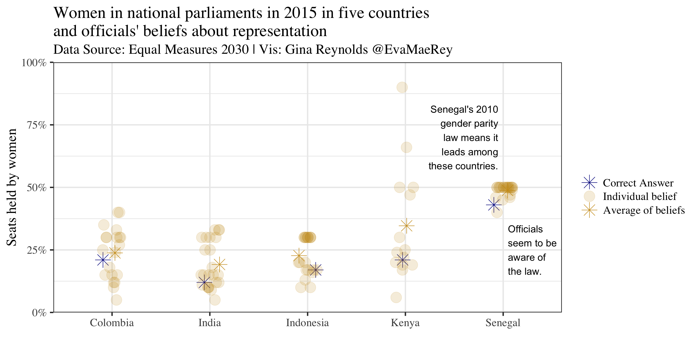

Chapter 4 Officials’ beliefs about women’s representation
The data provided is based on a small survey of elite officials in five less developed countries. The question that arrises from the data is: How well do elites know the conditions in their countries. In general, the elites overestimate women’s representation. But this is not the case in Senegal, where there are gender quotas in the Parliament. Most elites therefore estimate that the representation is about equal with men. I jitter the responses of the elites horizontally to avoid overplotting.
A random sample from the data set:
| Country | Topic | value | value_type | alpha |
|---|---|---|---|---|
| Colombia | Share of seats held by women | 0.33 | Individual belief | 0.3 |
| Senegal | Share of seats held by women | 0.46 | Individual belief | 0.3 |
| India | Share of seats held by women | 0.15 | Individual belief | 0.3 |
| Indonesia | Share of seats held by women | 0.10 | Individual belief | 0.3 |
| Senegal | Share of seats held by women | 0.50 | Individual belief | 0.3 |
ggplot(data = df_all) +
aes(x = Country) +
aes(y = value) +
aes(col = fct_inorder(value_type)) +
aes(alpha = fct_inorder(value_type)) +
aes(shape = fct_inorder(value_type)) +
geom_jitter(width = .1, height = 0, size = 7) +
geom_hline(yintercept = c(0, 100), col = "grey") +
geom_hline(yintercept = c(50), lty = 2, col = "grey") +
theme_bw(base_size = 20, base_family = "Times") +
scale_y_continuous(limits = c(0, 1), expand = c(0, 0), labels = scales::percent) +
# create just one key "" mixing aesthetics
scale_colour_manual(name = "", values = c("darkblue", "goldenrod3", "goldenrod3")) +
scale_alpha_manual(name = "", values = c(1, .17, 1)) +
scale_shape_manual(name = "", values = c(8, 19, 8)) +
annotate(geom = "text", x = 4.95, y = .70,
label = str_wrap("Senegal's 2010 gender parity law means it leads among these countries.", 16), size = 5, hjust = 1) +
annotate(geom = "text", x = 5.05, y = .250,
label = str_wrap("Officials seem to be aware of the law.", 10), size = 5, hjust = 0) +
labs(x = "") +
labs(y = "Seats held by women") +
labs(title = "Women in national parliaments in 2015 in five countries \nand officials' beliefs about representation") +
labs(subtitle = "Data Source: Equal Measures 2030 | Vis: Gina Reynolds @EvaMaeRey") 